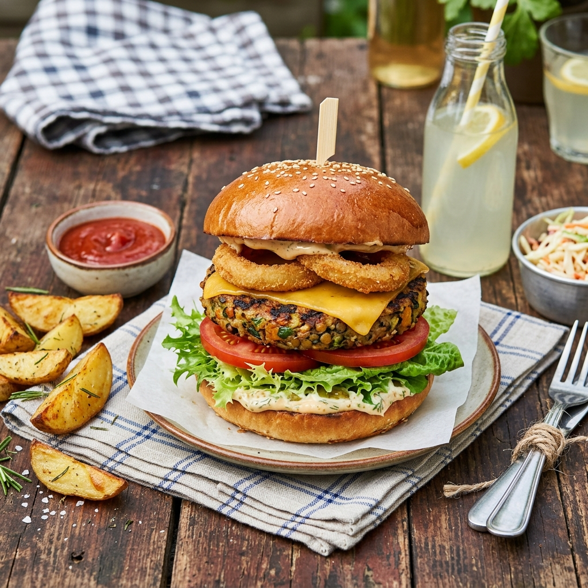

300g frische oder TK-Beeren (Heidelbeeren, Erdbeeren)
2 Bananen (in Scheiben)
Zubereitung
Mehl, Backpulver, Salz und Zucker in einer großen Schüssel mischen.
Eier und Milch verquirlen, nach und nach unter den Mehlmix rühren bis ein glatter Teig entsteht (keine Klümpchen).
Etwas Butter in einer beschichteten Pfanne bei mittlerer Hitze schmelzen.
Kleine Portionen Teig (ca. 2 EL pro Pancake) ins heiße Fett geben. Wenn Bläschen an der Oberfläche entstehen (2–3 Min), wenden und weitere 1–2 Min backen.
Stack auf Teller legen, mit Beeren, Bananenscheiben und Ahornsirup servieren.
Teig 10 Min ruhen lassen vor dem Backen — dann werden sie fluffiger! 🥞

🍲 Abendessen
Veggie-Burger vom Grill (oder Pfanne)
Entspannter Ausklang nach dem Sommerfest
▼
Zutaten (6 Pers.)
6 Burger-Brötchen (Brioche oder Sesam)
6 Veggie-Patties (Kühlregal, z.B. Garten Gourmet oder Beyond Meat)
1 Eisbergsalat (in Blättern)
2 Tomaten (in Scheiben)
1 rote Zwiebel (in Ringen)
6 Scheiben Cheddar oder Gouda
Essiggurken (in Scheiben)
Burger-Sauce: 4 EL Ketchup + 4 EL Mayonnaise + 2 TL Senf + 1 TL Essiggurken-Relish
Pommes oder Kartoffelwedges als Beilage (optional)
Zubereitung
Burger-Sauce anrühren: Ketchup, Mayo, Senf und Relish verrühren.
Veggie-Patties nach Packungsanweisung in der Pfanne oder auf dem Grill braten (ca. 4–5 Min pro Seite).
In der letzten Minute eine Käsescheibe auf jedes Patty legen und schmelzen lassen.
Burger-Brötchen aufschneiden und kurz toasten (1 Min im Ofen oder auf dem Grill).
Untere Brötchenhälfte mit Sauce bestreichen, dann Salat, Patty mit Käse, Tomate, Zwiebelringe, Essiggurke und obere Brötchenhälfte drauf.
Mit Pommes oder Wedges servieren.
Brötchen kurz toasten macht den Unterschied — knusprig vs. labberig! 🍔